扉页
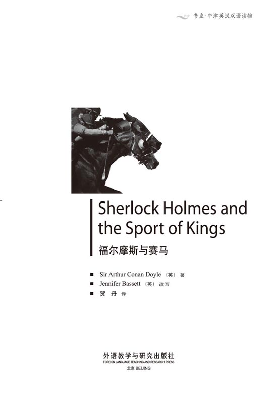
版权页
京权图字01-2006-3281
Originally published by Oxford University Press, Great Clarendon Street, Oxford. © 2003 This edition is licensed for sale in the People's Republic of China only and not for export therefrom.
'Oxford' is a registered trademark of Oxford University Press.
图书在版编目（CIP）数据
福尔摩斯与赛马：英汉对照／（英）柯南道尔（Conan Doyle, A.）著；（英）巴西特（Bassett，J.）改写；贺丹译．— 北京：外语教学与研究出版社，2006.6（2014.12 重印）
（书虫·牛津英汉双语读物）
书名原文：Sherlock Holmes and the Sport of Kings
ISBN 978-7-5600-5448-3
Ⅰ．福… Ⅱ．①柯…②巴…③贺… Ⅲ．①英语—汉语—对照读物②故事—英国—现代 Ⅳ．H319.4:I
中国版本图书馆CIP数据核字（2006）第023533号
出版人： 蔡剑峰
责任编辑：王霖霖
封面设计：孙莉明
出版发行：外语教学与研究出版社
社 址：北京市西三环北路19号（100089）
网 址：http://www.fltrp.com
版 次：2006年6月第1版
书 号：ISBN 978-7-5600-5448-3
* * *
凡侵权、盗版书籍线索，请联系我社法律事务部
举报电话：（010）88817519 电子邮箱：banquan@fltrp.com
法律顾问：立方律师事务所 刘旭东律师
中咨律师事务所 殷 斌律师
内容简介
内容简介
身为侦探，必须眼观六路、耳听八方，还得记住所有细节。他们要留心天气、别人穿的鞋、女人帽子上的花、男人衣服口袋里的一盒火柴。他们必须通晓人情世故，对狗、羊和马都得有所知。甚至，他们还必须了解赛马，这项帝王的娱乐运动……
一匹著名赛马——“银光”——失踪了，歇洛克·福尔摩斯和华生医生来到了位于达特穆尔的马厩。“银光”是一周后的一场大赛的夺冠热门，它的主人罗斯先生满怀信心能赢得这场比赛。但他首先得找到自己的马。这个案子还死了一个人——约翰·斯特雷克，“银光”的驯马师。他妻子在离马厩不远的泥地里发现了他的尸体。格雷戈里巡官要找出凶手，但他与罗斯先生却得出了错误的结论。
那么，歇洛克·福尔摩斯问道，星期一晚上马厩里究竟发生了什么事？还有，同样重要的是，没有发生什么？
SHERLOCK HOLMES AND THE SPORT OF KINGS
SHERLOCK HOLMES AND THE SPORT OF KINGS
Detectives must see, hear, and remember everything. They must be interested in the weather, people's shoes, flowers in a woman's hat, a box of matches in a man's pocket. They must understand people; they must know about dogs, and sheep, and horses. They must even know about horseracing, the sport of kings...
When Silver Blaze, a famous racehorse, disappears, Sherlock Holmes and Dr Watson go down to his Dartmoor stables. Silver Blaze is the favourite for a big race in a week's time, and his owner, Mr Ross, is hoping to win this race. But first, he needs to find his horse. There is also a dead man in the case — John Straker, Silver Blaze's trainer. His wife found his body in the mud not far from the stables. And Inspector Gregory needs to find the killer. But he and Mr Ross are getting the wrong answers to their questions.
So, says Sherlock Holmes, what did happen at the stables on Monday night? And, just as important, what did not happen?
目录
1. A horse called Silver Blaze
1
A horse called Silver Blaze
'I must go down there, Watson. I must,' said Sherlock Holmes at the breakfast table on Thursday morning.
'Go? Go where?' I asked.
'To Dartmoor — to King's Pyland.'
'Ah! So that's it,' I said. 'Well, everybody in the country is talking about the case at King's Pyland.'
I always know when Holmes is interested in a case. He reads all the newspapers, he walks up and down, up and down the room, and does not speak for hours.
He did all those things yesterday. He did not answer any of my questions, but I knew that it was the mystery at King's Pyland.
The morning newspapers were on the breakfast table. 'What is happening at King's Pyland? Where is Silver Blaze?' they asked. 'Who killed John Straker? What are the police doing? Can they find the horse before the big race next week?'
Silver Blaze was a famous racehorse, and John Straker was his trainer. One of the biggest horse races of the year — the Wessex Cup —was next week, and Silver Blaze was the favourite to win. But on Monday night at King's Pyland two things happened. Someone killed John Straker, and Silver Blaze disappeared.
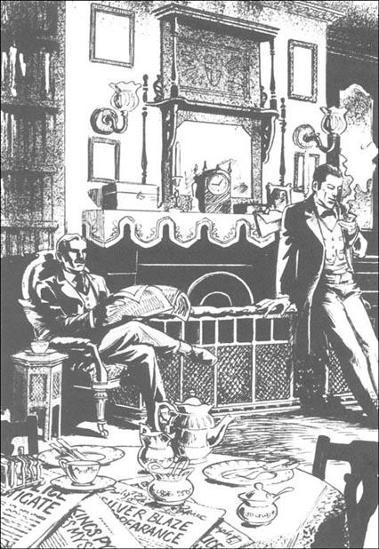
I was interested in this case too. 'Do you need my help, Holmes?' I asked. 'I would very much like to come with you.'
'My dear Watson,' said Holmes, 'of course you must come with me. We can catch the twelve o'clock from Paddington, and talk about the case on the train.'
Two hours later we were on the train to Tavistock. We read all the midday newspapers, but there was nothing new in them.
'So, Watson, what do you think about this case?'
'Well, the newspapers say —'
'Ah, yes. The newspapers understand nothing. One day they say one thing, the next day they say another. But we must look at the case more carefully. What did happen on Monday night at King's Pyland? And what did not happen? That's an important question too.'
'Do the police have any answers?' I asked.
'No,' said Holmes. 'On Wednesday morning I had two letters. One was from Mr Ross, the owner of the horse, and the other was from the Dartmoor police — an Inspector Gregory. They ask for my help.'
'Wednesday morning!' I cried. 'But this is Thursday morning. Why didn't you go down yesterday?'
'Because it was an easy case. You can't hide a famous horse for long, I thought. Where can you hide a horse on Dartmoor? There are no buildings, no trees... But I was wrong, Watson. The case is now two days old, and nobody can find the horse — or Straker's killer. So here we are, on the train to Tavistock.'
'And what do you think about it all?' I said.
'Well, Watson, let's look at the case. First, we have a racehorse, Silver Blaze — only five years old, but already a winner in many big races. His owner, Mr Ross, is a happy man — and rich. The racegoers are happy too. Silver Blaze nearly always wins his races, and so people put big bets on him to win. And when the favourite wins the race, a lot of people make money on their bets. But what happens when the favourite doesn't win, Watson? What then?'
'A lot of people lose their money, of course,' I said. 'And people with big bets on a different horse can make much more money, when that other horse wins.'
'Right, Watson! So perhaps some people are very interested in Silver Blaze not running in the Wessex Cup. Of course, Mr Ross and his trainer, John Straker, know that, and they watch the horse very carefully.
'Now, let's look at the people and the place. The trainer, John Straker — a good man and wonderful with horses — worked for Mr Ross for twelve years. There are four horses in the training stables, and three boys working for Straker. One of them sits up all night with the horses, and the other two sleep in a room over the stables. We know nothing bad about any of the boys.
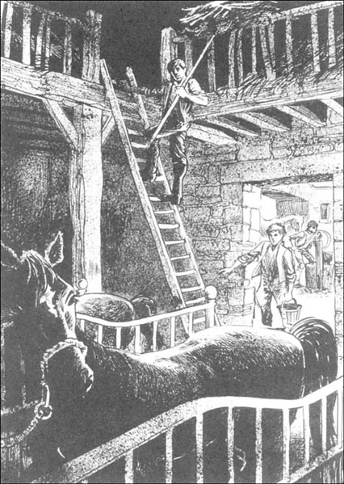
'Straker has a wife, no children, and lives — I mean, lived — in a house about two hundred metres from the stables. The town of Tavistock is two kilometres to the west, and about two kilometres to the east there is Capleton, another training stables. The owner there is Lord Backwater, and the trainer is Silas Brown. There are no other houses — just the hills of Dartmoor.'
I listened carefully. I wanted to remember it all because Holmes does not like to say anything twice.
'Now,' he said, 'what happened on Monday night? These papers came with Inspector Gregory's letter. The best thing is for you to read them, Watson. Then tell me what you think.'
I took the papers from him, and began to read.
case n. an event or set of events that need to be dealt with by the police （犯罪）案件
mystery n. a secret, hidden, or inexplicable matter 神秘的事物；谜
racehorse n. a horse bred or kept for racing 赛马
trainer n. a person who trains horses as a profession 驯马师
horse race n. a race between horses with riders on 赛马
favourite n. a competitor thought most likely to win （比赛中）最有希望的获胜者
inspector n. a police officer of middle rank 巡官；督察
racegoer n. a person who goes regularly to horse races 赛马会的常客
bet n. the money etc. staked 赌金，赌注
stable n. a building set apart and adapted for keeping horses 马厩
赛马“银光”
1．赛马“银光”
“我必须得去一趟，华生。不能不去。”星期四早上，歇洛克·福尔摩斯坐在桌旁吃早餐时说道。
“去？去哪儿？”我问道。
“去达特穆尔——去金斯皮兰。”
“啊！就是这事儿。”我说，“全英国的人都在谈论金斯皮兰的这个案子。”
当福尔摩斯对某个案子感兴趣的时候，我总能感觉到。他会浏览所有的报纸，在房间里不停地走来走去，几小时都不说话。
昨天他就是这样。我问什么他都不理，不过我知道他肯定是在想着金斯皮兰的神秘事件。
早上的报纸就放在餐桌上。“金斯皮兰发生了什么事？‘银光’在哪儿？”报上写道，“谁杀死了约翰·斯特雷克？警方在干什么？他们能不能在下星期大赛前找回‘银光’？”
“银光”是一匹著名的赛马，约翰·斯特雷克是它的驯马师。每年最大的赛马会之一——韦塞克斯杯——就在下星期举行，“银光”是夺冠的大热门。但星期一晚上，在金斯皮兰发生了两件事。约翰·斯特雷克被杀了，而“银光”失踪了。
我对这案子也很感兴趣。“你要我帮忙吗，福尔摩斯？”我问道，“我非常愿意跟你一起去。”
“亲爱的华生，”福尔摩斯说，“你当然得跟我一起去。我们可以赶12点从帕丁顿区开出的火车，在车上讨论案情。”
两个小时以后，我们坐上了去塔维斯托克的火车。我们看了中午所有的报纸，但报上没有什么新消息。
“华生，你对这案子有什么看法？”
“呃，报纸上说——”
“啊，报纸什么也不知道。他们今天说一套，明天又是一套。但我们得更用心地看待这个案子。星期一晚上在金斯皮兰发生了什么？没发生的又是什么？这也是个关键的问题。”
“警方找到答案了吗？”我问道。
“没有，”福尔摩斯说，“星期三早上我收到两封信，一封是马的主人罗斯先生写来的，另一封来自达特穆尔警方——格雷戈里巡官。他们请求我帮忙。”
“星期三早上！”我叫道，“但现在已经是星期四上午了。你为什么不昨天动身呢？”
“因为这个案子并不复杂。我原来以为没人能长时间地藏住一匹知名的马。你能把马藏在达特穆尔的什么地方呢？那儿没有建筑物，也没有树林……但我的判断并不准确，华生。现在这案子已经发生两天了，还没人找到那匹马——或者找到杀死约翰·斯特雷克的凶手。所以我们才坐上了这列开往塔维斯托克的火车。”
“那你对这一切有什么看法？”我问道。
“嗯，华生，我们来看看这个案子。首先，有一匹赛马‘银光’——才5岁，但已经是许多大赛的冠军。它的主人罗斯先生很开心——因为他有钱了。在这匹马上下注的赛马迷们也很开心，因为银光在比赛中几乎从未输过，因此人们在它身上下了重注。如果最被看好的赛马赢得了比赛，很多人都会凭他们下的赌注赢钱。但如果这匹马输了呢，华生？那会怎样？”
“当然是许多人输钱啦，”我说，“而且在别的马身上下了重注的人会赢得更多的钱，如果被下注的那匹马赢了的话。”
“说得对，华生！所以，可能有人很希望‘银光’不能参加韦塞克斯杯的比赛。当然，罗斯先生和他的驯马师约翰·斯特雷克知道这一点，他们非常小心地照顾着这匹马。”
“现在让我们来看看这案子涉及到的人和地点。驯马师约翰·斯特雷克——他是个好人，对马很有一套——已经为罗斯先生工作了12年了。训练用的马厩里有四匹马。斯特雷克手下有三个小马倌，其中一个会整夜守着马，另外两个睡在马厩顶上的一个房间里。就我们所知，这几个男孩儿的品行都很好。”
“斯特雷克已经结婚，没有孩子，住在——我是说，他曾经住在离马厩200米左右的一所房子里。向西两公里就是塔维斯托克镇，东边大约两公里的地方是卡普莱顿，另一处训马马厩。那儿的主人是巴克沃特勋爵，驯马师是赛拉斯·布朗。附近没有其他的房子了——只有达特穆尔的山。”
我仔细听着，想记住这一切，因为福尔摩斯不喜欢重复说过的话。
“那么，”他说道，“星期一晚上发生了什么事？这些卷宗是格雷戈里巡官随信一起寄来的。你最好看看，华生，然后告诉我你的想法。”
我从他手里拿过卷宗，看了起来。
2. Monday night at King's Pyland
2
Monday night at King's Pyland
Notes by Inspector Gregory, after talking to Edith Baxter, Ned Hunter, Mrs John Straker, and Mr Fitzroy Simpson
On Monday evening Straker locked the stables at nine o'clock, the usual time. Two of the boys then walked up to the trainer's house for their dinner, but the third boy, Ned Hunter, stayed in the stables to watch the horses. At five past nine, the Strakers' servant, a girl called Edith Baxter, carried Ned Hunter's dinner down to the stables. The dinner that night was a hot meat curry.
Edith was nearly at the stables when a man called out to her. He came up to her, and she saw a tall man in a grey suit and a hat, and a red and black scarf. He carried a big walking stick, and Edith felt afraid of him.
'Where am I?' the man asked. 'What is this place?'
'This is King's Pyland training stables,' she said.
'Good!' said the man. 'Now, a stable boy sleeps here every night — is that right? And I think you're taking his dinner to him now.' He took an envelope out of his pocket. 'Please give the boy this, and you can have some money for a beautiful new dress.'
Edith did not take the envelope. She ran past the man to the stables and up to a small open window. She always put the boy's dinner through this window, and Ned Hunter was there, ready to take it.
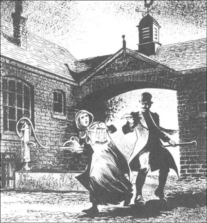
'Oh Ned!' Edith cried, but before she could say any more, the stranger came up behind her.
'Good evening,' he said through the window to the boy. 'I want to talk to you.'
'Who are you? What do you want?' Ned Hunter said.
'I want to make you rich, boy,' the stranger said. 'You help me, and I help you. You have two horses in for the Wessex Cup — Silver Blaze and Bayard. I hear that Bayard is the better horse, and that you stable boys are putting your bets on him to win. Am I right?'
'I'm not saying anything!' cried Ned Hunter. 'We don't talk about our horses at King's Pyiand, so get out! I'm getting the dog now!'
Ned ran across the stables to get the dog, and Edith began to run back to the house. But she looked back after about thirty metres, and saw the man at the little window, with his head and one arm inside the room.
Edith ran on, and a minute later, Ned came out of the building and locked the door behind him. He ran all round the stables with the dog, but the man was gone.
Ned Hunter told the trainer and the other boys about the stranger, but no one saw him again.
The next thing happened at one o'clock in the morning when John Straker got out of bed.
'What's the matter?' said his wife. 'Where are you going?'
'To the stables,' Straker said. 'I can't stop thinking about that stranger. I just want to have a look around.'
'But it's raining. Wait until the rain stops,' she said.
'No, no,' Straker said. 'I want to go now.'
He left the house and Mrs Straker went back to sleep. At seven in the morning she woke up, but her husband was not there. She quickly got up, called the servant, Edith, and they ran down to the stables.
They found the stables unlocked. Straker was not there, and inside, on a chair, Ned Hunter slept like a dead man. Silver Blaze was gone, and his stable door was open. They called the other two boys from the room over the stables. They were good sleepers and heard nothing in the night.
Nobody could wake Ned Hunter, so the two women and the boys ran out to look for the trainer and the horse. Five hundred metres from the stables, they saw Straker's coat on a small tree. Down the hill, just past the tree, they found the trainer. He was dead.
There was a long cut in his leg, and his head was broken in three places. In his right hand he had a small knife, with blood all over it, and in his left hand he had a red and black scarf.
Edith Baxter knew the scarf at once, and later, so did Ned Hunter.

'It's the stranger's scarf,' he told us. 'When I went to get the dog, that stranger was still at the stable window. He put something in my meat curry, to make me sleep — I know he did. Edith saw him, with his arm through the window.'
Ned Hunter was right about his meat curry. There was some of his dinner left, and we found a lot of opium in it. That's why Ned slept like a dead man.
What about the horse? We found his tracks in the mud, next to Straker's dead body. But what happened then? Someone hit Straker on the head, and killed him. Did that person take the horse away? Did the horse run away? Everybody on Dartmoor is looking for Silver Blaze, but there is no news of him.
When I began work on the case on Tuesday, we looked for the stranger. He was in Tavistock, and we found him easily. His name is Fitzroy Simpson. He lives mostly in London, and makes his money at the races, taking bets. We looked in his betting-book, and found a number of big bets — five thousand pounds — against the favourite for the Wessex Cup.
These were his answers to my questions.
'Why did you come down to Dartmoor?'
'I'm a betting man, Inspector. I need to know about the horses for the Wessex Gup — Silver Blaze, Bayard, and Desborough, the horse at Silas Brown's stables. He's the second favourite for the race, you see.'
'Did you go to the King's Pyland stables late on Monday evening?'
'Yes, I did. I just wanted to ask the stable boys some questions. They know the horses better than anyone.'
'And is this your scarf?'
'Yes... yes, it is.'
'And how did it get into the dead man's hand, Mr Simpson? Can you tell us that?'
'I don't know, Inspector, I don't know! I never saw the man. I lost my scarf in the dark. It wasn't me, Inspector, it wasn't me!'
We asked many more questions, but Fitzroy Simpson did not change his story. He was out at King's Pyland that night, his suit was still wet from the rain, and his big walking stick could break a man's head open. But there were no cuts on his body, so where did the blood on Straker's knife come from?
And where is the horse?

curry n．a dish of meat, vegetables, etc., cooked in a sauce of hot-tasting spices, usu. served with rice 咖哩菜肴
lock v. to fasten with a lock 锁；锁上
cut n．a division or wound made by cutting 伤口
opium n. a powerful illegal drug made from poppy seeds, that used to be used legally as a painkiller 鸦片；麻醉剂
track n. mark or marks left by a person, animal, or thing in passing 足迹；踪迹
周一晚上的金斯皮兰
2．周一晚上的金斯皮兰
格雷戈里巡官与伊道丝·巴克斯特、内德·亨特、约翰·斯特雷克夫人以及菲茨罗伊·辛普森先生谈话以后的记录。
星期一晚上，斯特雷克跟平常一样9点就锁了马厩。然后有两个小马倌走到驯马师家里吃晚餐，而第三个小马倌内德·亨特留在马厩照看马匹。9点5分，斯特雷克的佣人，一个名叫伊迪丝·巴克斯特的女孩子把内德·亨特的晚餐送到马厩。那天晚上的晚餐是热的咖哩烧肉。
伊迪丝快到马厩的时候，一个人向她打招呼。他走近她，伊迪丝看见一个高个子男人，穿着一件灰色外套，戴着帽子，围着一条黑红相间的围巾，手里拿着一根粗大的手杖。伊迪丝觉得有点儿害怕。
“我这是在哪儿？”那个人问道，“这是什么地方？”
“这是金斯皮兰的训练马厩。”伊迪丝回答道。
“太好了！”那个人说。“那么，一个小马倌每天晚上睡在这儿——对吗？我猜你这是要去给他送晚餐吧。”他从口袋里掏出一个信封。“请把这个交给那个男孩儿，你就可以得到一笔钱买身漂亮衣服了。”
伊迪丝没拿那个信封。她从那个人身旁跑过去，跑到马厩那儿的一扇开着的小窗前。她一般都从这扇窗户将小马倌的晚餐递进去，内德·亨特已经在那儿准备取饭了。
“噢，内德！”伊迪丝叫道，但她还没来得及说别的，那个陌生人已经来到了她身后。
“晚上好，”他隔着窗户对那个男孩说，“我想跟你谈谈。”
“你是谁？你想干什么？”内德·亨特说。
“我想让你发财，孩子，”那个陌生人说，“你要是帮我，我就会帮你。你们有两匹马要参加韦塞克斯杯——‘银光’和贝亚德。我听说贝亚德更好，你们这帮小马倌都在它身上下了注。对吗？”
“我不会透露任何事！”内德·亨特叫道，“我们不会在金斯皮兰谈论自己的马，快走开！我要放狗了！”
内德穿过马厩去牵狗，伊迪丝开始回头往房子里跑。但她跑了大约30米后，回头看见那个人站在那扇小窗子边，头和一只胳膊伸进了房间里。
伊迪丝继续往回跑，很快内德就出来了，顺手锁了门。他带着狗绕马厩跑了一圈，但那个人已经不见了。
内德·亨特跟驯马师和其他的马倌说了那个陌生人的事，但再没人看到那个人。
第二件事发生在凌晨1点。约翰·斯特雷克从床上爬了起来。
“怎么了？”他妻子说，“你要去哪儿？”
“去马厩看看，”斯特雷克说，“我老想着那个陌生人。我想去看看。”
“可天在下雨呢。等雨停了再去吧。”她说。
“不，不，”斯特雷克说，“我就想现在去。”
他离开了房子，斯特雷克夫人接着睡觉。早上7点，她醒了过来，但她丈夫不在。她马上起床，叫来了佣人伊迪丝，一起往马厩跑去。
她们发现马厩没锁。斯特雷克不在，内德·亨特在里边一张椅子上睡得跟死人一样。“银光”也不见了，它所在的马厩开着门。她们叫醒了睡在马厩顶上房间里的另外两个小马倌。他俩都睡得很死，没听见夜里有任何动静。
没人能叫醒内德·亨特，于是那两个女人和两个小马倌跑出去找驯马师和那匹马。在离马厩500米的地方，他们看见斯特雷克的外套挂在一棵小树上。就在树边的山脚下，他们找到了驯马师。他死了。
他腿上有一道长长的伤口，脑袋有三处破了。他右手拿着一把小刀，上面满是血，左手拽着一条黑红相间的围巾。
伊迪丝·巴克斯特马上就认出了那条围巾，后来，内德·亨德也认出来了。
“是那个陌生人的围巾，”他告诉我们，“我去牵狗的时候，那个人还在马厩的窗户边。他放了什么东西在我的咖哩烧肉里，让我昏昏入睡——我知道一定是他。伊迪丝看见他了，他的手伸进了窗户里。”
内德·亨特关于他的咖哩烧肉的判断是对的。他的晚餐还剩下一点儿，我们在里边发现大量的麻醉剂。这就是内德睡得那么死的原因。
那匹马呢？我们在泥地里发现了它的脚印，就在斯特雷克的尸体旁边。但是随后发生了什么事？有人打中了斯特雷克的头，杀死了他。那个人把马带走了吗？还是马自己跑了？达特穆尔的每个人都在找“银光”，但没有关于它的任何消息。
星期二我开始调查这个案子，我们就着手寻找那个陌生人。他在塔维斯托克，我们轻而易举地找到了他。他名叫菲茨罗伊·辛普森。他大部分时间住在伦敦，靠在赛马中赌马赚钱。我们查看了他的赌金簿，发现他在韦塞克斯杯上下了重注——5000英镑——买“银光”输。
以下是他回答我的问题的记录。
“你为什么去达特穆尔？”
“巡官，我是个赌徒。我得了解参加韦塞克斯杯的马——‘银光’、贝亚德，还有德斯伯勒，赛拉斯·布朗家的马。你知道，那是这次比赛的第二大热门。”
“星期一晚上你是不是去了金斯皮兰的马厩？”
“对。我只想向着马厩的马倌打听点儿事情。他们比任何人都了解马的状况。”
“这是你的围巾吗？”
“对……是我的。”
“那它是怎么到被害人的手里的，辛普森先生？你能向我们解释一下吗？”
“我不知道，巡官，我不知道！我从来没见过那个人，那天夜里我的围巾丢了。不是我干的，巡官，不是我！”
我们还问了很多问题，但菲茨罗伊·辛普森坚持他的说法。他那天晚上确实在金斯皮兰，他的外套淋了雨，还是湿的，他那条粗大的手杖足以打破人的脑袋。但他身上没有伤口，那斯特雷克手里那把刀上的血迹又是从哪儿来的呢？
还有，那匹马哪儿去了？
3. John Straker's pockets
3
John Straker's pockets
'Mmm, very interesting,' I said. I gave the papers back to Holmes, and he put them away.
'So, Watson, what can you tell me?' he asked.
I thought for a minute. 'This cut on Straker's leg. Perhaps he did it with his own knife. When something hits you very hard on the head, and you have a knife in your hand... It can happen, you know.'
'Very good, Watson. And that's bad news for Fitzroy Simpson.'
'So did Simpson do it, do you think?' I said.
'Perhaps,' said Holmes. 'Let's look at it. Simpson puts opium in the boy's dinner. He goes away and comes back later in the night. He gets into the stables, takes the horse out, and leaves. But the trainer arrives at that moment, sees him, and follows him. The two men fight, and Simpson breaks Straker's head open with his stick. Then Simpson takes the horse — but where? Or did the horse run away? Is it still out on the moor? And how did Simpson get into the locked stables? I don't know, Watson, I don't know. We must wait and see.'
When we arrived at Tavistock station, two men came to meet us. Inspector Gregory was a tall, slow-moving man with blue eyes, and Mr Ross was small and quick. He was the first to speak.
'Very pleased to see you, Mr Holmes. The Inspector here is working hard, but we need help. We must find poor Straker's killer, and I want to find my horse.'
'Is there any news?' asked Holmes.
'Let's talk on the way,' the Inspector said. 'I'd like you to see everything in the daylight.'
We were soon out of the little town and up on the brown hills of the moor.
Inspector Gregory thought that the killer was Fitzroy Simpson. 'Simpson was out in the rain that night. His suit was still wet on the Tuesday,' he said. 'He had a big stick, and his scarf was in the dead man's hand. That looks bad, Mr Holmes, very bad.'
Holmes smiled. 'You need more than that, Inspector. The servant, Edith, spoke of an envelope. Did Simpson say anything about that?'
'Yes, he said it had money in it — a ten-pound note for the stable boy.'
'What about this other training stables, at Capleton?' asked Holmes. 'Does Simpson have friends there?'
'No, we don't think so. We went to Capleton, of course. Their horse, Desborough, is the second favourite for the Wessex Cup, and Silas Brown, the trainer, was not friendly with Straker. But we found nothing.'
When we arrived at King's Pyland, Inspector Gregory took us into the trainer's house.
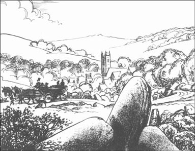
'Straker's body is upstairs,' he said. 'But we have here the things from his pockets and from the ground next to his body. Would you like to see them, Mr Holmes?'
'Very much,' said Holmes.
We went into the front room, and the Inspector opened a box and put things on a table. There was a box of matches, a small piece of candle, some money, a watch, some papers, and a small, thin knife.
'This is a strange knife,' Holmes said. He looked at it carefully, and then gave it to me. 'What is it, Watson?'
'It's an eye knife,' I said. 'Doctors use these when they cut into an eye. You don't usually see them outside a hospital.'
'Mm,' said Holmes. 'So why did Straker take this knife? It's no good for fighting.'
'His wife says it was in the bedroom for some days,' said Inspector Gregory. 'Perhaps he just took it because it was there on the table.'
'Perhaps,' said Holmes. 'What about these papers?'
'One is a letter from Mr Ross, the others are bills,' the Inspector said. 'Three of them are bills for the horses' food, and this one is a bill from a dress-maker in London, for a Mr William Darbyshire. He was a friend of Straker's, his wife tells us. His letters sometimes came here, and Straker sent them on.'
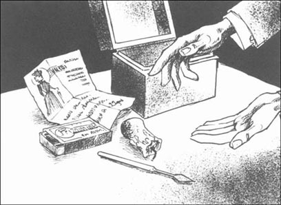
'Mrs William Darbyshire is an expensive lady,' said Holmes, looking at the bill. 'Twenty-five pounds is a lot of money, for just one dress and one hat.' He put the bill down and moved to the window. 'Inspector, can we go out on the moor now, before the light begins to go?'
We left the room and at the front door we saw a woman. She came up to Inspector Gregory and put her hand on his arm. 'Is there any news?' she said.
'No, Mrs Straker, but here is Mr Holmes, the famous detective from London. We have him to help us now.'
'I think I met you a month or two ago, Mrs Straker,' said Holmes. 'Let me see... Yes, it was in Plymouth, at a garden-party. Do you remember?'
'No, sir. That wasn't me.'
'But I remember so well... You had a blue dress, and a dark blue hat with white flowers on it.'
'I don't have a hat with flowers on it, sir,' Mrs Straker said.
'Well, well, I am wrong, then. I am so sorry.' And with that Holmes followed the Inspector outside. The four of us then walked past the stables and up onto the moor. After ten minutes Inspector Gregory stopped.
'Here we are,' he said. 'Straker's body was just down there. His coat was here, on this small tree —'
'On the tree? Not on the ground?' Holmes asked.
'Oh no. It was on the tree, carefully away from the mud on the ground.'
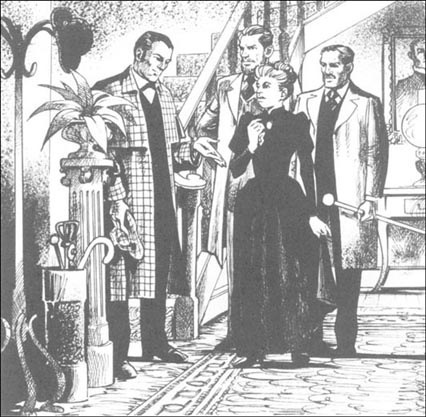
'Mmm. Interesting,' said Holmes. 'Now, I must look at the mud down there.'
'Ah,' said Inspector Gregory, 'and to help you, I have here in this bag one of Straker's shoes, one of Fitzroy Simpson's shoes, and one of Silver Blaze's horseshoes.'
'My dear Inspector, well done!' Holmes was very pleased. 'You think of everything.'
For some minutes Holmes looked carefully at the ground, his eyes only centimetres away from the mud.
'Hello!' he said suddenly. 'What's this?' From out of the mud he took a match, or a small piece of one.
'Now why didn't I find that?' said the Inspector.
'I knew it was there, you see,' said Holmes.
'You knew? But how could you know that?'
Holmes smiled but did not answer. He then took the shoes, got down on the ground, and began to look at all the tracks in the mud. We stood and watched him, but after five minutes Mr Ross looked at his watch.
'Er, this is very interesting, Mr Holmes,' he said, 'but is it going to take a long time?'
'No,' said Holmes. He got to his feet. 'I don't need to do any more here. Watson and I are going to take a little walk across the moor now, with the horseshoe.'
Mr Ross looked at the Inspector. 'Can we go back to the house and talk? I must take Silver Blaze's name out of the Wessex Cup race — and do it today, I think.'
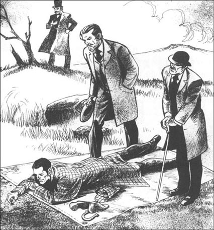
'Don't do that!' cried Holmes. 'No, no, you must leave the horse's name in for the race.'
'But...' Mr Ross began. Then he laughed, a little angrily. 'Well, thank you, Mr Holmes. Thank you for your help. See you later then, at the house.'
And he and the Inspector walked away.
moor n. a tract of open uncultivated upland, esp. when covered with heather 高沼
daylight n. the period of time during the day when it is light 白天
bill n. a written list showing how much you have to pay for services you have received, work that has been dune etc. 账单
dress-maker n. a person, esp. a woman，who makes clothes professionally（尤指女装）裁缝
detective n. a person, esp. a member of a police force, employed to investigate crimes 侦探
horseshoe n. an iron shoe for a horse shaped like the outline of the hard part of the hoof 马蹄铁；马掌
约翰·斯特雷克的口袋
3．约翰·斯特雷克的口袋
“嗯，很有意思，”我说。我把卷案还给福尔摩斯，他将它们收了起来。
“那么，华生，你有什么看法？”他问。
我想了想。“斯特雷克腿上的那个伤口没准是他自己的刀划的。如果有什么东西猛撞你的头，你手上又正好拿着把刀……你知道，很有可能。”
“很好，华生。这对菲茨罗伊·辛普森来说可不是个好消息。”
“那你觉得是辛普森干的吗？”我问道。
“有可能。”福尔摩斯说，“让我们想想，辛普森在那个小马倌的晚餐里下了麻醉剂。他先离开，夜里晚些时候又回来，进入马厩，把马牵出来，然后逃走。但那时驯马师刚好赶到，看见了他，并紧追不舍。两个人打了起来，辛普森用手杖把斯特雷克的头打开了花。然后辛普森带走了那匹马——但带到哪里去了？还是马自己跑了？它是不是还在高沼地里？还有，辛普森怎么进到上了锁的马厩里的？我不知道，华生，我不知道。我们必须等等看。”
我们到塔维斯托克车站时，有两个人来接我们。格雷戈里巡官个子高高的，动作缓慢，有一双蓝色的眼睛。罗斯先生是小个子，性子很急。他首先开口。
“福尔摩斯先生，很高兴见到你。这位巡官很卖力，但我们需要帮助。我们必须找出杀害可怜的斯特雷克的凶手，我还想找到我的马。”
“有什么新的消息吗？”福尔摩斯问道。
“我们在路上说吧，”巡官说，“我想让你趁白天看看所有的情况。”
我们很快就出了小镇，到了沼泽地里的棕色小山上。
格雷戈里巡官认为凶手就是菲茨罗伊·辛普森。“那天晚上下雨的时候辛普森在外面。他的外套到星期二还是湿的，”他说，“他有一根粗大的手杖，他的围巾又在死者手里。看上去不妙，福尔摩斯先生，非常不妙。”
福尔摩斯笑了笑。“你还需要更多证据，巡官。那个佣人，伊迪丝，提到了一个信封。辛普森对此说了什么吗？”
“说了，他说里边有钱——一张十英镑的钞票，给小马倌的。”
“卡普莱顿的另一个训练马厩情形怎么样？”福尔摩斯问道，“辛普森在那儿有没有什么朋友？”
“没有，我们以为没有。当然，我们也去了卡普莱顿。他们的马，德斯伯勒，是韦塞克斯杯的第二大热门，驯马师赛拉斯·布朗跟斯特雷克关系不好。但我们没发现什么。”
我们到达金斯皮兰以后，格雷戈里巡官把我们带到驯马师的家里。
“斯特雷克的尸体在楼上，”他说，“但我们把他口袋里的东西，还有在他身边地上找到的东西放在这儿。你想看看吗，福尔摩斯先生？”
“很想。”福尔摩斯说。
我们走进前厅，巡官打开一个盒子，把里边的东西放到一张桌子上。有一盒火柴，一小段蜡烛，一些钱，一块表，几张纸，还有一把很薄的小刀。
“这把刀很奇怪，”福尔摩斯说。他仔细地看了看，然后把刀递给我。“这是什么，华生？”
“这是一把眼科手术刀，”我说，“医生给眼睛动手术的时候就用这样的刀。一般在医院外面见不到这样的刀。”
“嗯，”福尔摩斯说，“那斯特雷克拿这刀做什么呢？它并不适合打斗。”
“他妻子说这把刀在卧室里已经放了一段时间了，”格雷戈里巡官说，“也许只是因为它在桌子上，他就顺手拿了。”
“也许，”福尔摩斯说，“那些纸是什么？”
“一张是罗斯先生的信，其他的是账单，”巡官说，“其中有三张是马饲料的账单，这张是伦敦的一个裁缝寄来的账单，是给一个名叫威廉·达比希雷的人的。斯特雷克的妻子告诉我们，他是斯特雷克的朋友。有时他的信会寄到这儿，斯特雷克再转寄出去。”
“威廉·达比希雷夫人是位出手阔绰的女士，”福尔摩斯看着账单说，“一件衣服和一顶帽子就花了25英镑，这可是一大笔钱呢。”他放下账单，走到窗户边。“巡官，趁着天色还没暗下去，我们能现在去高沼地吗？”
我们离开了房间。在大门口，我们看见一个女人。她走向格雷戈里巡官，拉住他的手臂。“有什么消息吗？”她问。
“没有，斯特雷克夫人，不过福尔摩斯先生在这儿，他是伦敦来的著名侦探。我们现在有他帮忙了。”
“我想一两个月前我曾经见过你，斯特雷克夫人。”福尔摩斯说，“让我想想……对，是在普利茅斯的一个游园会上。你还记得吗？”
“没有，先生，那不是我。”
“但我记得很清楚……你穿着蓝色的衣服，戴着一顶深蓝色的帽子，上面有白色的花。”
“我没有上面带花的帽子，先生。”斯特雷克夫人说。
“哦，那是我记错了。对不起。”福尔摩斯说着，跟着巡官出了门。然后，我们四个人经过马厩，走到高沼地上。十分钟后，格雷戈里巡官停了下来。
“就是这儿，”他说，“斯特雷克的尸体就在这儿，他的外套在这边，挂在这棵小树上——”
“在树上？不在地上？”福尔摩斯问道。
“哦，不是。是在树上，小心地避开了地上的泥泞。”
“嗯，真有意思，”福尔摩斯说，“现在，我必须看看那边的泥地。”
“啊，”格雷戈里巡官说，“为了协助你，我在这个包里装了一只斯特雷克的鞋，一只菲茨罗伊的鞋，还有一只‘银光’的蹄铁。”
“亲爱的巡官，太棒了！”福尔摩斯非常高兴。“你考虑得真周到。”
福尔摩斯仔细地检查了地面足足几分钟，他的眼睛离泥地只有几厘米。
“噢！”他突然说道，“这是什么？”他从泥里捡起一根火柴，或者说是一小截火柴棍。
“我怎么就没发现呢？”巡官说。
“我知道它会在这儿，你瞧。”福尔摩斯说。
“你知道？但你怎么可能知道呢？”
福尔摩斯笑了笑，但没回答。然后他拿起那些鞋，趴在地上，开始查看地上所有的痕迹。我们站在那儿看着他，但五分钟后，罗斯先生看了看表。
“呃，这很有意思，福尔摩斯先生，”他说，“但是不是还要很长时间？”
“不会。”福尔摩斯说。他站了起来。“我不用再在这儿做什么了。现在华生和我要在高沼地里走走，带着这块马蹄铁。”
罗斯先生看着巡官，“我们能回房子里谈谈吗？我得把‘银光’的名字从韦塞克斯杯的参赛名单里撤下来——我想，今天就得这么做。”
“别那么做！”福尔摩斯叫道，“不，不，你必须把马的名字留在参赛名单里。”
“但是……”罗斯先生开了个头，然后有点儿恼火地笑了起来。“啊，谢谢，福尔摩斯先生。谢谢你的帮助。那就过一会儿在家里见。”
然后他跟巡官一起走了。
4. Looking for a horse
4
Looking for a horse
Holmes and I walked slowly across the moor. In the evening sunlight the autumn colours on the hills were beautiful — reds and browns and yellows.
But Holmes saw nothing of that. 'So, Watson,' he said, 'let's forget John Straker for a minute, and think about the horse. Horses are friendly animals. Let's say that Silver Blaze runs away after the killing. Here he is, out on the cold wet moor. What does he do next?'
'He looks for a nice warm stable,' I said, 'with food and water.'
'Right, Watson. He didn't go back to King's Pyland, we know that, but there is another stable not far away, at Capleton. Perhaps he went there. And the way to Capleton, Watson, is down. this hill. Let's go!'
We walked quickly down the hill, and at the bottom we found a small river and some very wet ground.
'Wonderful,' said Holmes. 'I wanted mud, and here it is. You follow the left side of the river, Watson. We're looking for the tracks of horseshoes.'
We found them after only fifty metres. Holmes took the horseshoe out of his pocket and put it next to the tracks. 'Yes, that's Silver Blaze, no question about it.'
We followed the tracks easily, then lost them for a time, but found them again about two hundred metres from the Capleton stables.
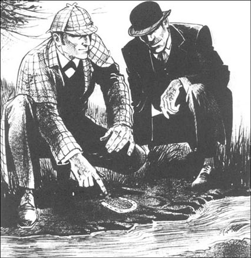
'Here they are,' I cried. 'And look—there's another track here, of a man's shoe.'
Holmes got down to look. 'You're right, Watson. And the man is walking next to the horse.'
We followed the two tracks to Capleton stables, and were still twenty metres away when a man came out and called to us. He had a red, angry face.
'Go away! We don't want visitors here! Go away!'
'Mr Silas Brown?' Holmes said to him.
'What do you want?' said the man. 'I don't talk to newspaper people, so just go away.'
'We are not from a newspaper,' said Holmes, smiling. 'But you have a horse called Silver Blaze in your stable.'
'That's not true!' Mr Brown said angrily.
'Shall we go in and talk about it?' said Holmes. He did not wait for an answer, but took the man's arm and moved quickly to the gate. He looked back at me and said quietly, 'Wait for me here, Watson.'
Twenty minutes later they came out again. Holmes looked pleased, and Mr Silas Brown was a different man. He looked smaller and older, and his face was afraid.
'Remember,' said Holmes, 'you must be there on the day, on time, and everything must be ready.'
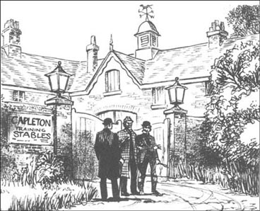
'Yes, yes,' Silas Brown said quickly. 'You can be sure of it. Oh yes, you can be sure of it.'
'Good,' said Holmes. 'Well, goodbye for now.'
Holmes and I then began to walk back to King's Pyland along the road.
'Does he have the horse, then?' I asked.
Holmes laughed. 'Yes. He said no at first, of course, but he's afraid of the police. He doesn't want them to know about this, and I can help him with that.'
'But why didn't the police find the horse?' I asked. 'Inspector Gregory said they went to Capleton.'
'Oh, it's easy to change the colour of a horse's coat.' Holmes laughed again. 'Gregory is a good policeman, But I don't think he knows much about horses.'
'And why did Brown tell you?' I said.
'When I walked through the stables with him,' said Holmes, 'the ground was muddy and I saw the tracks of his shoes in the mud. You remember those tracks on the moor? Well, these were the same shoes. After that, it was easy, and he told me everything. He found Silver Blaze on the moor early in the morning and brought him into the stables. The horse is very well, just a different colour at the moment. Brown put a very big bet on Desborough to win the Wessex Cup, you see. And with Silver Blaze out of the race...'
'But why did you leave the horse there? Is it safe with him?' I did not understand Holmes's plan.
'My dear Watson,' Holmes said, 'the horse is very safe. Silas Brown is afraid of me, afraid of the police, afraid of losing everything. Silver Blaze must be ready to race next week, or Brown's life as a racehorse trainer is finished — and Brown knows that.'
'Mr Ross isn't going to like it,' I said.
'Mr Ross,' said Holmes, 'doesn't understand detective work. He wants answers today, now, at once. So, he must learn a lesson. He must learn to wait. Say nothing about Silver Blaze for the moment, Watson.'
Back at King's Pyland, we found Mr Ross and Inspector Gregory in the trainer's house.
'An interesting visit,' said Holmes. 'But my friend and I must go back to London by the midnight train.'
The Inspector and Mr Ross stared at him, and I saw that Holmes was right about Mr Ross.
'So our famous London detective can't find poor Straker's killer,' Mr Ross said. 'Or my horse.'
'It's a difficult case, that's true,' said Holmes quietly. 'But your horse is going to run in the Wessex Cup next Tuesday. You have my promise on that.'
'Hm! A promise is a wonderful thing,' said Mr Ross. 'But I would like the horse better than a promise.'
Holmes smiled, then turned to Inspector Gregory. 'Inspector, can you give me a photograph of Straker?'
'Yes, of course,' said the Inspector. He took one from an envelope in his pocket and gave it to Holmes.
It was now time to go back to Tavistock, and we went outside. One of the stable boys was there, and Holmes suddenly spoke to him.
'I see you have some sheep here, next to the stables,' he said. 'Are they all well?'
'They're all right, sir,' said the boy, 'but two or three of them are a little lame. They went lame last week.'
Holmes was very pleased about this. He got into the carriage and said to the Inspector, 'Remember the lame sheep, Gregory, remember the lame sheep!'
Mr Ross was not interested in the sheep, but the Inspector stared at Holmes. 'You think the sheep are important?'
'Oh yes,' said Holmes. 'Very important.'
The Inspector still stared at him, very interested now. 'And what other things are important, Mr Holmes?'
'The strange incident of the dog in the night-time.'
'The dog did nothing in the night-time.'
'That was the strange incident.'
sunlight n. natural light from the sun 日光；日照
friendly adj. acting or ready to act as a friend 友好的
visitor n. a person who visits or is visiting 访问者；游客
pleased adj. happy or satisfied 满足的；高兴的
coat n. an animal's fur, hair, etc. （动物的）皮毛
understand v. to know the meaning of (something) 理解；明白
lame adv. disabled, esp. in the foot or leg 跛的；瘸的
寻找赛马
4．寻找赛马
福尔摩斯和我慢慢穿过高沼地。夕阳下，山上的秋色非常美——红色、棕色、黄色交相辉映。
但福尔摩斯对此视而不见。“那么，华生，”他说，“让我们暂时忘记斯特雷克，想想那匹马吧。马是温顺的动物。我们假设‘银光’在斯特雷克被杀之后跑了。它跑到这又湿又冷的高沼地上，然后会怎么办呢？”
“它会寻找一处温暖的马厩，”我说，“一个有食有水的地方。”
“对，华生。它没回到金斯皮兰，我们知道这一点，但离这儿不远的地方还有一个马厩，在卡普莱顿。没准它去那儿了。华生，去卡普莱顿的路就是从这儿下山。我们走！”
我们很快下了山，在山脚下，我们发现一条小河，还有一片很湿的地面。
“太好了，”福尔摩斯说，“我正想有块泥地，它就出现了。华生，你沿着河的左岸走。我们找找马蹄铁的痕迹。”
就在50米远的地方，我们发现了马蹄铁的印子。福尔摩斯从口袋里拿出那块马蹄铁，放在那个蹄印的旁边。“没错，这就是‘银光’，毫无疑问。”
我们轻松地追踪着蹄印，有一会儿又失去了它的踪迹，但在离卡普莱顿马厩大约200米的地方，又发现了蹄印。
“在这儿，”我叫道，“看——这儿还有个印记，是一个人的鞋印。”
福尔摩斯蹲下查看。“你说得对，华生。而且这个人是走在马旁边的。”
我们随着二者的脚印一直到了卡普莱顿的马厩。当我们离马厩还有20米远时，一个人出来朝我们大吼。他满脸通红，怒火万丈。
“走开！我们这儿不欢迎游客！走开！”
“赛拉斯·布朗先生？”福尔摩斯对他说道。
“你们想干什么？”那个人问，“我不接受记者采访，赶快走开。”
“我们不是报社的记者，”福尔摩斯微笑着说，“但你的马厩里有一匹名叫‘银光’的马。”
“那不可能！”布朗先生愤怒地说。
“我们能进去谈谈吗？”福尔摩斯说。他没有等着那人回答，而是抓住他的胳膊，快步走向大门。他回头看看我，从容地说：“华生，在这儿等我。”
20分钟后，他们又出来了。福尔摩斯看上去很满意，赛拉斯·布朗先生完全变了个人。他看上去矮了些，也老了些，脸上满是惊恐。
“记住，”福尔摩斯说道，“到那天你一定得准时到，准备好一切。”
“好的，好的，”赛拉斯·布朗连忙说，“你放心吧。好的，你放心。”
“那好，”福尔摩斯说，“那先再见吧。”
福尔摩斯与我开始沿着大路走回金斯皮兰。
“那他藏着那匹马吗？”我问道。
福尔摩斯大笑起来。“没错。他一开始当然说没有。但他害怕警察。他不想让他们知道这件事，而我能帮他应付。”
“但警方为什么没发现那匹马呢？”我问道，“格雷戈里巡官说他们去过卡普莱顿。”
“哦，要改变一匹马的毛色很容易，”福尔摩斯再次大笑起来。“格雷戈里是个好警察，但我认为他对马了解不深。”
“那布朗为什么要告诉你呢？”我说。
“当我跟他一起穿过马厩的时候，”福尔摩斯说，“地上有很多泥，我看见了他留在泥地上的鞋印。你还记得高沼地里的脚印吗？两种鞋印是一样的。然后就简单了，他把一切都告诉了我。那天清早，他在高沼地里发现了‘银光’，就把它带回了自己的马厩。那匹马很好，只不过现在是另一个颜色。你知道，布朗下了重注，赌德斯伯勒能赢得韦塞克斯杯。如果‘银光’不参加比赛的话……”
“但你为什么要把马留在那儿呢？它在他那儿安全吗？”我不明白福尔摩斯的想法。
“亲爱的华生，”福尔摩斯说，“那匹马很安全。赛拉斯·布朗害怕我，害怕警察，害怕失去一切。‘银光’一定要参加下周的比赛，否则布朗作为赛马训练师的生涯就完蛋了——布朗明白这一点。”
“罗斯先生不会喜欢这样的。”我说。
“罗斯先生，”福尔摩斯说，“不了解侦探工作。他想今天、现在、立刻就得到答案。因此，他必须得到点儿教训。他得学会等。暂时不要透露关于‘银光’的事情，华生。”
我们回到金斯皮兰，发现罗斯先生和格雷戈里巡官都在驯马师家里。
“这是一次很有意思的拜访，”福尔摩斯说，“但我的朋友和我必须乘午夜的火车返回伦敦。”
巡官和罗斯先生瞪着他，我发现福尔摩斯对罗斯先生的判断是对的。
罗斯先生说道：“这么说我们著名的伦敦大侦探找不到杀死可怜的斯特雷克的凶手，也找不到我的马。”
“不错，这个案子很复杂。”福尔摩斯平静地说，“但你的马会参加下星期二的韦塞克斯杯。这一点我敢保证。”
“哼！保证真是妙不可言，”罗斯先生说，“但我更想要回我的马，不想要什么保证。”
福尔摩斯笑了，然后转向格雷戈里巡官。“巡官，能不能给我一张斯特雷克的照片？”
“当然可以。”巡官说。他从口袋里的一个信封内掏出一张照片，递给福尔摩斯。
该回塔维斯托克了，我们走到屋外。有一个小马倌在外面，福尔摩斯突然跟他说起话来。
“我看见你们在这儿养了几只羊，在马厩旁边，”他说，“它们还好吗？”
“它们很好，先生，”小马倌说，“但其中两三只有点儿跛。它们上星期开始跛的。”
福尔摩斯对此非常高兴。他上了马车，对巡官说道：“记住那些跛脚的羊，格雷戈里，记住那些跛脚的羊！”
罗斯先生对羊一点儿兴趣都没有，但巡官盯着福尔摩斯。“你觉得那些羊很重要？”
“对。”福尔摩斯说，“非常重要。”
巡官还瞪着他，马上就来了兴致。“那你觉得还有什么东西很重要，福尔摩斯先生？”
“狗在那天晚上的奇怪举动。”
“那天晚上狗什么举动都没有。”
“这就是奇怪的地方。”
5. A day at the races
5
A day at the races
On Tuesday Holmes and I took the train to Winchester, and Mr Ross met us at the station. He drove us to the races, but he was not a happy man.
'Well, Mr Holmes,' he said coldly. 'Do you have news of my horse?'
Holmes smiled. 'He's safe and well, I'm sure. How is the betting for the Wessex Cup?'
'Very strange,' said Mr Ross. 'Yesterday Silver Blaze was fifteen to one, but today he's the favourite, at three to one. Why, I don't know.'
'Ah!' said Holmes. 'Somebody knows something!'
We arrived only minutes before the beginning of the Wessex Cup race. This was Holmes's plan, I think. Mr Ross had no time to ask questions. There were six horses running in the race, and Silver Blaze's name was there, at number 4. The horses began to come out for the race, and Mr Ross got very excited.
'Where is he? I can't see him!' he cried.
'There are two more horses to come out,' I said. 'And look! There's number 4 now, in racing colours of red and blue. Those are your colours, Mr Ross.'
And there was Silver Blaze, a big brown horse with a white nose. He came past us, looking strong and well, and ready for anything.
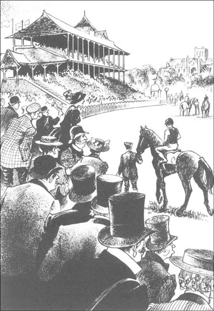
'Holmes,' cried Mr Ross, 'I was wrong about you! I'm sorry. But why, how — ?'
'Shh!' said Holmes. 'Watch! Yes, they're off!'
It was a good race, fast and exciting. After the first minute, a horse with yellow racing colours came to the front, and stayed there.
'That's Desborough, from the Capleton stables,' said Holmes. 'A good horse, but Silver Blaze is better.'
But Silver Blaze was three horses behind Desborough.
'Come on, come on!' cried Mr Ross. 'Move up now!'
We all watched the red and blue colours. 'Yes!' I said. 'Look, he's moving up now! Watch him go!'
Slowly but surely, Silver Blaze moved up into fourth place, then into third place, then into second place. Now only Desborough was in front of him.
'That's my boy!' said Mr Ross. 'Go on, go on!'
'Desborough's getting tired,' Holmes said. 'Watch!'
Eighty metres, fifty metres... 'He's away!' cried Mr Ross. 'His nose is in front, yes, yes, he's going to do it!'
And he did. Silver Blaze kept his nose in front, finished first, and won the Wessex Cup.
'Wonderful!' said Mr Ross. 'Wonderful! What a race! What a horse! Mr Holmes, how can I thank you?'
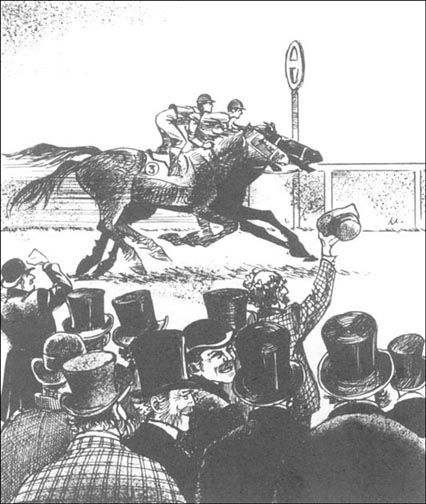
'You must thank the horse, not me,' said Holmes, smiling. 'Let's go down and have a look at him.'
Silver Blaze was still excited by his big race. Mr Ross looked him up and down. 'He looks well, very well. I don't understand any of it, Mr Holmes. How did you do it? Where did you find him? And perhaps you now have John Straker's killer too. Do you?'
'Yes,' said Holmes quietly. 'Yes, I have him too.'
Mr Ross and I stared at him. 'You have him?' Mr Ross said. 'Where is he?'
'He is here.'
'Here! Where?'
'Here with me now, at this moment.'
Mr Ross's face began to go red. 'What are you saying, Mr Holmes?' he said angrily. 'Are you saying —?'
Sherlock Holmes Laughed. 'No, no, Mr Ross, not you. The killer is standing behind us.'
He turned and put his hand on Silver Blaze's back.
'The horse?' cried Mr Ross.
'The horse!' I said.
'Yes, the horse,' said Holmes. 'But don't be angry with him. You can hear all about the mystery, but later, please. I have a little bet on a horse in the next race, and I would like to see it win...'
drive v. to take (someone) in a carriage 驾车运送
finish v. to be in a particular position at the end of a race or competition （在竞赛中）获得名次
比赛日
5．比赛日
到了星期二，福尔摩斯和我乘火车去了温切斯特，罗斯先生在车站接我们。他赶车送我们去赛场，但他的情绪不高。
“呃，福尔摩斯先生，”他冷冷地说，“你有我的马的消息吗？”
福尔摩斯笑了。“我确信它很安全，而且状况良好。现在韦塞克斯杯的赌注怎样？”
“很奇怪，”罗斯先生说，“昨天‘银光’还是15比1，今天又成了大热门，变成了3比1。唉，我真不明白。”
“啊！”福尔摩斯说，“一定是有人知道了什么消息。”
我们刚好在韦塞克斯杯开赛前几分钟赶到。我猜这是福尔摩斯的计划。这样罗斯先生就没时间问什么问题。一共有六匹马参加比赛，“银光”的名字也在，是4号。赛马开始出场准备比赛了，罗斯先生激动起来。
“它在哪儿？我没看见它！”他叫道。
“还有两匹马没出来，”我说，“看！现在出来的是4号，比赛服装是红色和蓝色。罗斯先生，那是你的颜色。”
“银光”就在那儿，那是一匹棕色的高头大马，鼻子是白色的。它经过我们面前，看上去身强体壮，气色很好，好像什么都难不倒它。
“福尔摩斯，”罗斯先生叫道，“我错怪你了！对不起，但是，你怎么——”
“嘘！”福尔摩斯说，“看！好的，他们出发了！”
这场比赛很精彩，紧张激烈，扣人心弦。比赛开始后一分钟，一匹身披黄色比赛服的马冲到了最前面，并一直保持领先。
“那是德斯伯勒，卡普莱顿马厩的马。”福尔摩斯说，“这匹马很不错，不过‘银光’更棒。”
但“银光”还在德斯伯勒身后的三匹马后面。
“快，快！”罗斯先生大叫，“快赶上去！”
我们都注视着那片红蓝相间的颜色。“好！”我说，“看，它赶上来了！看它赶上来了！”
“银光”稳稳地赶到了第四名的位置，然后是第三名，然后是第二。现在，只有德斯伯勒在它前面了。
“真是好样儿的！”罗斯先生说，“加油，加油！”
“德斯伯勒没力气了，”福尔摩斯说，“看！”
80米，50米……“他超过去了！”罗斯先生大喊，“它的鼻子在前面了，是的，是的，它就要赢了！”
它的确成功了。“银光”保持鼻子在先超出德斯伯勒，首先到达终点，赢得了韦塞克斯杯。
“太好了！”罗斯先生说，“太好了！这场比赛太精彩了！这匹马太棒了！福尔摩斯先生，我该怎么谢你才好呢？”
“你得谢谢那匹马，不用谢我。”福尔摩斯微笑着说，“我们下去看看它吧。”
“银光”还在为这场刚刚结束的大赛激动不已。罗斯先生上下打量着它。“它看上去很好，好极了。我一点儿也不明白，福尔摩斯先生。你是怎么做到的？你在哪儿找到它的？你现在多半也已经抓到了杀害约翰·斯特雷克的凶手。对吗？”
“对。”福尔摩斯平静地说，“对，我也抓到他了。”
罗斯先生和我都盯着他。“你抓到他了？”罗斯先生说，“他在哪儿？”
“他在这儿。”
“这儿！哪儿？”
“现在就在这儿，跟我在一起。”
罗斯先生的脸涨红了。“你在说些什么，福尔摩斯先生？”他愤怒地说，“你是指——”
歇洛克·福尔摩斯大笑起来。“不，不，罗斯先生，不是你。凶手站在我们身后。”
他转过身，把手放在“银光”的背上。
“这匹马？”罗斯先生叫道。
“这匹马！”我说。
“对，就是这匹马，”福尔摩斯说。“但别怪它。你会听到所有的秘密，但得晚些。下一场比赛我在一匹马身上下了注，我想看着它赢……”
6. Holmes has the answers
6
Holmes has the answers
On the train back to London Holmes told us the story behind the mystery, and the time went very quickly.
'Before we went down to King's Pyland,' my friend began, 'I thought it was Fitzroy Simpson. But when we arrived at the stables, I suddenly remembered the hot meat curry. Why didn't I think of it before? That, you see, was the beginning.'
'The meat curry...' said Mr Ross, thinking about it. 'Er, how did the meat curry help you?'
'Do you know the taste of opium?' Holmes said. 'No? Well, it's not a very strong taste, but it's there. You can taste it in most food, but not in curry. Curry has a very strong taste, stronger than opium. So the killer says, "I need a night when the dinner is a meat curry. Then Ned Hunter can eat his dinner happily, without the taste of opium — and go to sleep." But did Fitzroy Simpson know that curry was the dinner on Monday night? Of course not. How could he? He didn't make the dinner, he was a stranger at King's Pyland, he knew nobody in the trainer's house. So, we forget Simpson, and think again. Who knew about the curry before dinner on that Monday night?'
'John Straker and his wife,' I said. 'And the servant.'
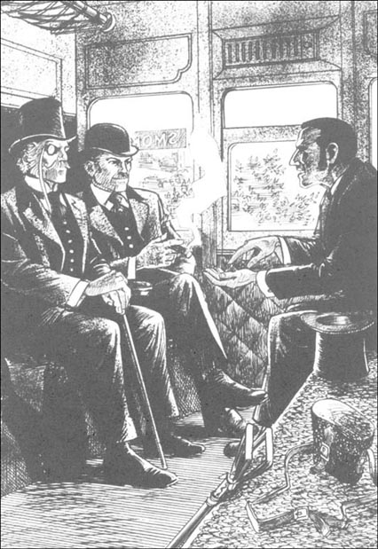
'Right, Watson. And so on to the next question, about the dog. We know there was a dog in the stables that night because Ned Hunter took the dog out when Simpson was there. Then in the middle of the night someone went into the stables and took out a horse. The two boys sleeping upstairs in the stables heard nothing, because there was nothing to hear. The dog did not bark. Why not?'
'Aha!' said Mr Ross. 'It didn't bark, because it knew the visitor. Dogs only bark at strangers.'
'Right again. So, the midnight visitor was John Straker. But why did he take the horse out? What did he want? It was something dishonest, or why did he put opium in his stable boy's dinner? We all know about dishonest trainers. They can make a lot of money — they put big bets against their own horse, and then stop their horse winning. But how? What was Straker's plan here? Perhaps the answer was in his pockets, I thought.'
'And so it was. You remember the strange knife? Dr Watson here told us about it — an eye knife, used by doctors in hospitals. With a knife like this, you can make a cut — a very, very small cut — in the tendon of a horse's back leg. Nobody can see the cut, and the horse only feels it a little. He's not lame, but he doesn't run his best, so he cannot win the race.'
'And Straker wanted to do this to my horse?' cried Mr Ross. 'How could he? I thought he was a good man!'
'No,' said Holmes. 'He wasn't a good man — or a careful one. No horse stands quietly when a knife goes into its back leg. Straker didn't want anyone to hear the noise, so he took the horse out onto the moor.'
'The candle, and the match,' I said. 'Of course!'
'That's right,' Holmes said. 'And I learnt more from Straker's pockets too. You are a man of the world, Mr Ross. Do men carry other men's bills around in their pockets? No, they do not. So who was Mr Darbyshire? Another name for John Straker. And there was a lady in the case, too. A very expensive lady. I talked to Mrs Straker about the dress and the hat on the bill, but she knew nothing about them.'
'And on Monday night, out on the moor,' said Mr Ross, 'what happened, do you think?'
'How about this?' said Holmes. 'Straker takes the horse down the hill. He sees Simpson's scarf on the ground, and takes it with him — why, I don't know. He puts his coat on a tree, gets out the candle and the matches, and the knife, and begins his work. But Silver Blaze doesn't like it. Perhaps he's afraid, perhaps he feels something is wrong. He's a big strong horse, and he gets angry. He kicks out with his back legs, and the horseshoes hit Straker on the head. Straker goes down, into the mud, and the knife in his hand goes into his own leg. The horse disappears into the night.'
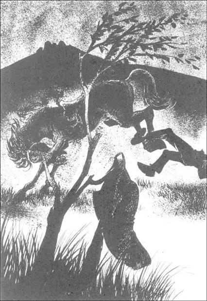
'Wonderful!' Mr Ross said. 'You tell it very well, Mr Holmes. I see it all now.'
'And the sheep?' I asked. 'What about the sheep? You told Inspector Gregory that they were important.'
'Ah yes, Watson, the sheep.' Holmes smiled. 'And they were important. It's not easy to make a very small cut in an animal's tendon, and Straker did not want to get it wrong. He needed to practise first, but what on? There were his own sheep, right in front of him.'
'And where did you go in London, the day after we got back?' I asked. 'Was it to that dress-maker on the bill for Mr Darbyshire?'
'Very good, Watson!' Holmes laughed. 'Yes, I had a photograph of Straker, and the dress-maker knew him at once. "Oh yes," she said, "that's Mr Darbyshire. I do a lot of work for him. Mrs Darbyshire is a very beautiful lady, and she likes expensive dresses." ' Holmes laughed again. 'It's an old, old story. Straker is not the first man with two women in his life. He needed more money for the expensive Mrs Darbyshire, so he thought of this plan with Silver Blaze. And there you have it, Mr Ross.'
'Yes, I understand it all now,' said Mr Ross, 'and thank you very much, Mr Holmes. There's just one thing. Where was the horse?'
'Ah, yes. The horse was safe and well, and with a friend,' said Sherlock Holmes. 'I can't tell you who or where, because I made a promise. But here we are, nearly in London. You have the answer to the mystery, Mr Ross, you are the winner of the Wessex Cup, and the owner of the fastest racehorse in the south of England. What more do you need?'
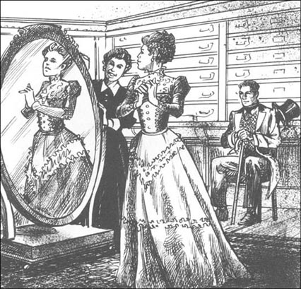
forget v. to stop thinking about 不再把……放在心上
bark v. (a dog, fox, etc.) give a sharp explosive cry 吠；叫
dishonest adj. not honest 不老实的；不正直的
tendon n. a thick strong cord that connects a muscle to a bone 腱
afraid adj. full of fear; frightened 害怕
practise v. to do or perform on repeatedly in order to gain skill 练习
福尔摩斯的答案
6．福尔摩斯的答案
在回伦敦的火车上，福尔摩斯给我们讲了这个谜后面的事情真相，不知不觉时间过得飞快。
“我们去金斯皮兰之前，”我的朋友开口说道，“我以为是菲茨罗伊·辛普森干的。但当我们走到马厩那儿的时候，我突然想起那些热的咖哩烧肉。在这之前我怎么没想到这个呢？瞧，这就是事件的开端……”
“咖哩烧肉……”罗斯先生说着，回想了一下。“呃，咖哩烧肉对你有什么启发？”
“你知道麻醉剂的味道吗？”福尔摩斯说，“不知道？呃，那种味道不怎么浓烈，但能感觉到。大多数食物里放了麻醉剂都能尝出来，但在咖哩里尝不出来。咖哩味道很浓，比麻醉剂味道还重。所以凶手说：‘我需要找个吃咖哩烧肉的晚上，这样内德·亨特就会愉快地享受晚餐，不会尝出麻醉剂的味道——然后就睡着了。’但菲茨罗伊·辛普森知道星期一晚上的晚餐是咖哩吗？当然不知道。他怎么能知道呢？晚餐又不是他做的。他不是金斯皮兰人，也不认识驯马师家里的任何人。所以，我们排除了辛普森，开始重新思考。星期一晚上，谁在晚饭前就知道有咖哩呢？”
“约翰·斯特雷克和他妻子，”我说，“还有那个佣人。”
“没错，华生。然后是下一个问题，关于狗的。我们知道那天晚上马厩里有一条狗，因为辛普森在的时候内德·亨特把狗牵出来了。然后深夜里有人进了马厩，牵走了一匹马。睡在马厩楼上的两个小马倌没听到动静，因为根本就没什么动静。狗没有叫。为什么没叫呢？”
“啊哈！”罗斯先生说，“狗没叫是因为它认识来的人。狗只对着生人叫。”
“又说对了。也就是说，深夜来的人就是约翰·斯特雷克。但他为什么要把马带出去呢？他想干什么？肯定是什么不光彩的事，不然他为什么要在自己的马倌的饭里下麻醉剂？我们都知道有些不老实的驯马师，他们能赚很多钱——他们下重注赌自己的马输，然后阻止自己的马赢得比赛。但怎么做呢？斯特雷克的计划是什么？我想，答案没准就在他的口袋里。
“确实如此。你还记得那把奇怪的小刀吗？这位华生医生告诉了我们那是什么——一把眼科手术刀，是医院里的医生用的。你可以用这样一把刀制造一个伤口——一个非常非常小的伤口——在马的后腿肌腱上。没人会看见这个伤口，马也只有一点点感觉。马不会瘸，但不能发挥最好的水平，这样就无法赢得比赛。”
“斯特雷克想用这种手段对付我的马？”罗斯先生叫道，“他怎么能这样？我原以为他是个好人！”
“不，”福尔摩斯说，“他不是好人——也不是个小心的人。当一把刀刺进后腿的时候，没有哪匹马会安安静静地站着。斯特雷克不想让人听见动静，于是他就把马牵到了高沼地里。”
“蜡烛，还有火柴，”我说，“当然是这样！”
“不错，”福尔摩斯说，“我从斯特雷克的口袋里还知道了更多情况。罗斯先生，你是个通晓世故的人。人们会把其他人的账单放在口袋里随身带着吗？不，他们不会。那么达比希雷先生是谁呢？那是约翰·斯特雷克的另一个名字。这个案子里还有一位女士。一位阔绰的女士。我向斯特雷克夫人试探了账单上列出的衣服和帽子，但她对这些东西一无所知。”
“那星期一晚上，在高沼地里，”罗斯先生说，“你认为发生了什么事？”
“这个怎么样？”福尔摩斯说，“斯特雷克把马带到山脚下。他看见辛普森的围巾在地上，就捡了起来——为什么，我也不知道。他把外套挂在一棵树上，取出蜡烛和火柴，还有那把刀，开始于他的活计。但‘银光’不喜欢这样。或许它受了惊，或许它觉得有什么不对劲。它是匹高大强壮的马，而且不耐烦了。它扬起后腿踢了出去，马蹄正中斯特雷克的脑袋。斯特雷克倒了下去，跌在泥地里，他手里的刀划到了自己的腿。那匹马消失在夜色中。”
“太精彩了！”罗斯先生说，“你讲得太生动了，福尔摩斯先生，我现在全明白了。”
“还有那些羊呢？”我问道，“那些羊是怎么回事？你对格雷戈里巡官说它们很重要。”
“啊，对了，华生，那些羊。”福尔摩斯笑了起来。“它们的确很重要。在动物的肌腱上划一个小伤口不是那么容易，斯特雷克不想失手。他得先练习，但在哪儿练呢？他自己的羊，就在他面前。”
“我们回伦敦后第二天你去哪儿了？”我问道，“是去达比希雷先生账单上那个裁缝那儿吗？”
“太棒了，华生！”福尔摩斯大笑。“对，我拿了张斯特雷克的照片，那个裁缝一眼就认出他了。‘哦，是的，’她说，‘这是达比希雷先生。我替他做了很多衣服。达比希雷夫人是一位很美的女士，她喜欢昂贵的衣服。’”福尔摩斯又笑起来。“这是个老掉牙的故事。斯特雷克不是第一个享受齐人之福的男人。他需要更多的钱来满足那位奢侈的达比希雷夫人，于是他打起了‘银光’的主意。现在你知道是怎么回事了，罗斯先生。”
“对，我现在全明白了，”罗斯先生说，“福尔摩斯先生，太谢谢你了。不过还有件事。马当时在哪里？”
“啊，对。那匹马当时很安全，状况良好，跟一位朋友在一起。”福尔摩斯说，“我不能告诉你它跟谁在一起，或者在什么地方，因为我作出了承诺。不过，我们现在已经快到伦敦了。罗斯先生，你已经知道了谜底，又赢得了韦塞克斯杯，还是英格兰南部速度最快的赛马的主人。你还有什么不满足的呢？”
ACTIVITIES: Before Reading
ACTIVITIES
Before Reading
1. Read the introduction. How much do you know now about the story? Tick one box for each sentence.
1) Silver Blaze is a racehorse.
YES □／NO □
2) Sherlock Holmes is the owner of Silver Blaze.
YES □／NO □
3) Racehorses make money when they win races.
YES □／NO □
4) Silver Blaze's trainer is dead.
YES □／NO □
5) Mr Ross found John Straker's body.
YES □／NO □
6) John Straker's body was in the stables.
YES □／NO □
7) Inspector Gregory knows all the answers.
YES □／NO □
8) Sherlock Holmes goes down to Dartmoor.
YES □／NO □
2. Some of these things are helpful for finding the answer to the mystery. Can you guess which? Tick nine of the sixteen boxes.
| □ a betting book | □ some hair |
| □ somebody's dinner | □ a horseshoe |
| □ somebody's breakfast | □ a chicken |
| □ a box of matches | □ a dog |
| □ a woman's shoes | □ a cat |
| □ a woman's hat | □ some sheep |
| □ a man's hat | □ a knife |
| □ a man's shoes | □ a letter |
ACTIVITIES: While Reading
ACTIVITIES
While Reading
Read Chapters 1 and 2. How much do we know now about the mystery? Which of these sentences are true, and which are possibly true, but we don't really know yet?
1 Someone killed John Straker on Monday night.
2 Silver Blaze disappeared the same night.
3 Silver Blaze is dead.
4 Before Monday, Silver Blaze was the favourite to win the Wessex Cup.
5 Ned Hunter did not take Fitzroy Simpson's money.
6 John Straker found Fitzroy Simpson in the stables in the middle of the night.
7 Fitzroy Simpson put opium in Ned Hunter's curry.
8 Edith Baxter put opium in Ned Hunter's curry.
9 Ned Hunter slept all night because of the opium.
10 Fitzroy Simpson killed John Straker.
Before you read Chapter 3, can you guess what Holmes does next? Choose one answer for each question.
1 Which of these people does Holmes talk to?
a) Ned Hunter
b) Mrs Straker
c) Fitzroy Simpson
2 What does Holmes find in the mud on the moor?
a) an envelope
b) a horseshoe
c) a broken match
Read Chapters 3 and 4. We can answer some of these questions now, but not all of them. Answer the questions when you can, and write 'Don't know yet' for the others.
1 Why did Simpson have a ten-pound note in an envelope?
2 Why did John Straker take a doctor's eye knife with him that night?
3 What was the dress-maker's bill for?
4 Why did Mr Darbyshire's letters come to Straker's house?
5 How did Holmes know that the tracks on the moor were Silver Blaze's?
6 What did Silas Brown do to Silver Blaze?
7 What did Holmes want to go back to London that night?
8 Why wasn't Mr Ross happy with Holmes's promise?
9 Why did Holmes want a photograph of John Straker?
10 What was important about the lame sheep?
11 What did the dog at the stables do in the night-time?
12 Why was that strange?
Before you read Chapter 5 (A day at the races), can you guess what happens? Choose one answer for each question.
1 What happens in the Wessex Cup race? Silver Blaze...
a) wins the race.
b) comes second.
c) comes last.
d) falls and breaks a leg.
2 Who doesn't go to the races?
a) Sherlock Holmes.
b) Dr Watson.
c) Inspector Gregory.
d) Mr Ross.
3 Where is John Straker's killer on that day?
a) In the Dartmoor stables.
b) At the races.
c) In a police station.
d) In London.
Read Chapter 5, Choose the best question-word for these questions, and then answer them.
What/ Why
1... was Mr Ross very pleased with Sherlock Holmes?
2... was the name of John Straker's killer?
3... did Holmes want to talk about it later?
How does the story end? Before you read Chapter 6, look at these sentences. Can you guess how many are true? Choose as many as you like.
1 The dog did not bark because it did not hear the midnight visitor.
2 The midnight visitor to the stables was John Straker.
3 John Straker wanted to kill Silver Blaze.
4 John Straker wanted Silver Blaze to win the Wessex Cup.
5 John Straker wanted to win a lot of money on the Wessex Cup race.
6 Straker used the eye knife to cut Silver Blaze's leg.
7 In London Holmes visited a dress-maker.
8 Mr William Darbyshire was a good friend of Straker's.
9 Sherlock Holmes tells Mr Ross all about Silas Brown.
ACTIVITIES: After Reading
ACTIVITIES
After Reading
1. Match the names with the sentences. Then use the sentences to write about the people. Use a pronoun (he) and linking words (and, but, so, because) where possible.
Mr Ross/Silas Brorvn/John Straker/Fitzroy Simpson
Example: Mr Ross wanted Sherlock Holmes to find his horse, but he did not understand detective work and...
1) ______ changed the colour of Silver Blaze's coat.
2) ______ made his money taking bets at the races.
3)______ needed money for the expensive Mrs Darbyshire.
4) Mr Ross wanted Sherlock Holmes to find his horse.
5) ______ went down to King's Pyland stables.
6) ______ tried to make Silver Blaze a little lame.
7) ______ was afraid of the police.
8) Mr Ross did not understand detective work.
9)______ wanted to ask the stable boys some questions.
10) ______ went to the stables in the middle of the night.
11) ______ told Sherlock Holmes everything.
12) ______ took Silver Blaze out onto the moor.
13) ______ wanted answers to the mystery at once.
14) ______ took Silver Blaze to Winchester races.
15) ______ never came home again.
2. Here is a new illustration. Answer the questions, and then find a good place in the story to put the picture.
1) What is happening in this picture?
2) What is not happening in this picture?
3) What does the answer to the second question tell us?
A good place for the picture is in Chapter ______.
Now write a caption for the illustration.
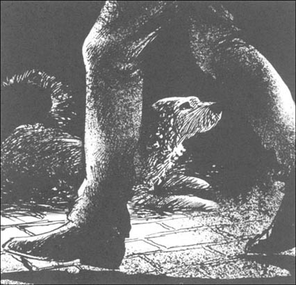
Caption: ______________________________________
3. What did Sherlock Holmes say to Silas Brown? Put their conversation in the right order, and write in the speakers' names. Sherlock Holmes speaks first (number 3).
1) ______ 'A different colour? The police are going to find that very interesting, Mr Brown.'
2) ______ 'And how do you know that?'
3) ______ 'Now, Mr Silas Brown, I want to see Silver Blaze.'
4) ______ 'Yes, I have. He's round the back. He's... er... well, he's a different colour now.'
5) ______ 'Yes. And he must win it! With your help, Mr Brown. Now, listen carefully....'
6) ______ 'The tracks... Oh. Oh dear.'
7) ______ 'My name is Sherlock Holmes, and I know that the horse is here.'
8) ______ 'Don't tell the police, sir. Please! I can change the colour back very quickly.'
9) ______ 'Yes, Mr Brown, oh dear! Now, have you got the horse here?'
10) ______ 'Yes, very well. He's a wonderful horse, sir. He can still win the Wessex Cup, you know.'
11) _______ 'Because I found the tracks of your shoes on the moor, next to the tracks of Silver Blaze, and the tracks came here.'
12) _______ 'He's not in my stables! And who are you?'
13) _______ 'Then you must do it today. Is the horse well?'
4. Here is a newspaper report about Silver Blaze. Use these words (one for each gap) to complete the passage.
before, bets, cut, disappeared, found, good, horse, horseshoes, kicked, killed, killer, knows, leg, mystery, owner, races, where, won
At Winchester ______ today Silver Blaze ______ the Wessex Cup —______ news for the ______ Mr Ross and all the people with ______ on the horse. The detective Sherlock Holmes ______ Mr Ross's horse, and he ______ the name of John Straker's ______ too.
So who ______ John Straker? The ______ did! Straker tried to make a ______ in a tendon in Silver Blaze's ______, and the horse ______ out. The ______ hit Straker on the head and killed him. The horse then ______ until today.
And ______ was Silver Blaze in the week ______ the Wessex Cup race? That is still a ______.
5. Find the fourteen words (three letters or more) in this word search. Words go from left to right, and from top to bottom. Which four words make a headline for the newspaper report?
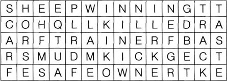
封底
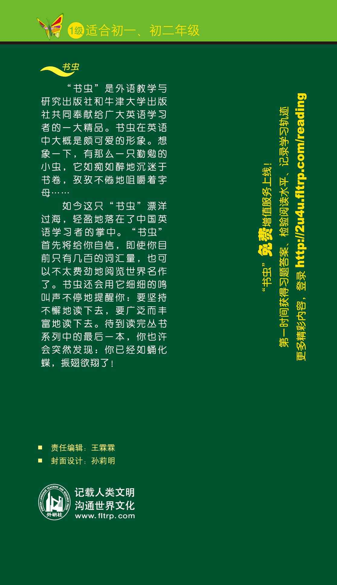